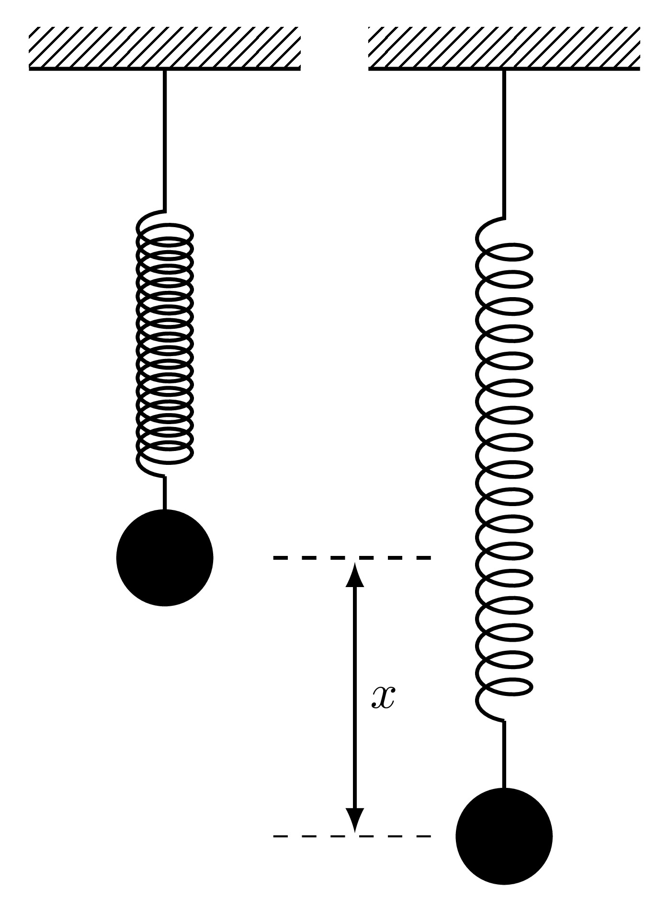
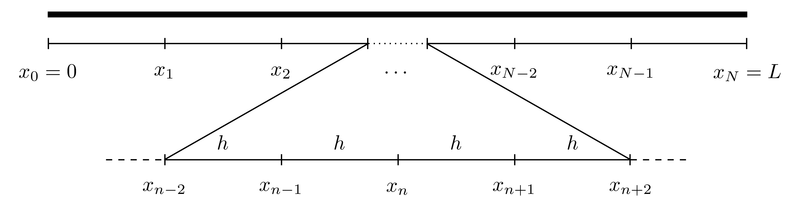
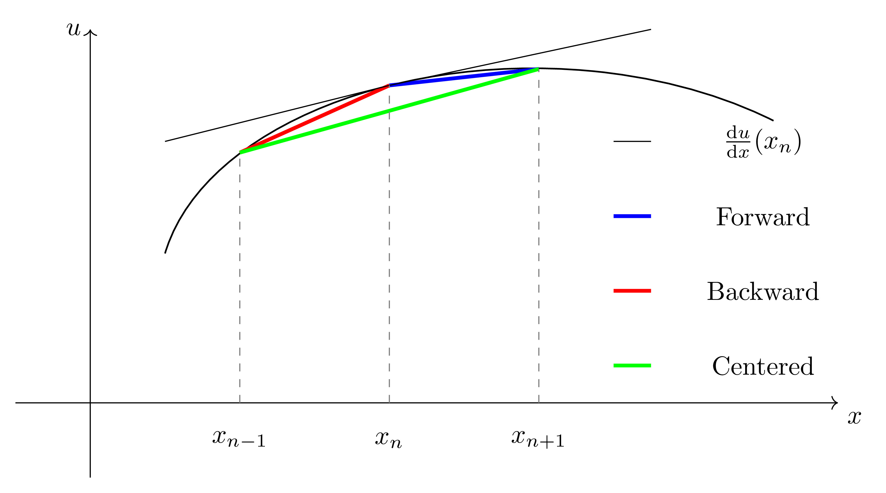
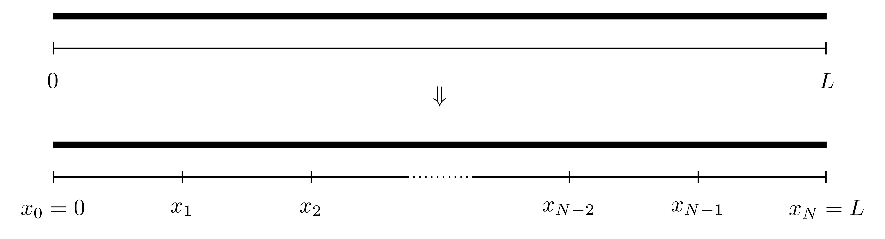

8 Boundary Value Problems
Boundary Value Problems (BVPs) are similar in many ways to initial value problems in the sense that a set of differential equations are given that are to be solved subject to certain conditions. In initial value problems, these conditions are imposed at the starting time but in boundary value problems, they are imposed at particular locations.
One of the most important differences when it comes to solving BVPs versus IVPs is the existence of solutions. Solutions to initial value problems always exist and are unique (subject to certain restriction on the right hand side), this is as a consequence of the Picard-Lindelöf theorem. The same cannot be said for boundary value problems; the solution to BVPs could exist and be unique, exist and not be unique or not exist at all.
8.1 Example of Boundary Value Problems
Consider a mass \(m\) hanging from a spring with spring constant \(K\). Suppose that the spring is extended (by pulling the mass) by a distance \(x\) as seen below. 
Then by Hooke’s Law, the force pulling the mass back to its equilibrium position is given by \[F=-Kx.\] As the mass is released, it will accelerate upwards with an acceleration \(a\) and the force responsible for this acceleration is given by Newton’s Second Law of Motion \[F=ma.\] The acceleration \(a\) is the second derivative of the displacement \(x\) with respect to time and since it acts in a direction opposite to the extension, then \[a=-\frac{\mathrm{d}^{2} x}{\mathrm{d} t^{2}} \quad \implies \quad F=-m\frac{\mathrm{d}^{2} x}{\mathrm{d} t^{2}}\] Equating the two expressions for the force from Newton’s Second Law and Hooke’s Law will give \[-Kx=-m\frac{\mathrm{d}^{2} x}{\mathrm{d} t^{2}} \quad \implies \quad\frac{\mathrm{d}^{2} x}{\mathrm{d} t^{2}}+\omega^2x=0 \quad \text{where} \quad \omega=\sqrt{\frac{K}{m}}.\] This differential equation represents the simple harmonic motion of a mass hanging on a frictionless massless spring which oscillates with a frequency \(\omega\). Since this is a second order differential equation, two conditions need to be imposed:
- Initial conditions can be imposed at the starting time, specifically \(x(0)\) and \(x'(0)\) which prescribe the initial position and initial speed,
- Boundary conditions can be imposed at different times, say \(x(0)\) and \(x(10)\) which prescribe the location at time \(t=0\) and time \(t=10\).
Consider the differential equation for the undamped simple harmonic oscillator with frequency 1, namely \[\frac{\mathrm{d}^{2} u}{\mathrm{d} t^{2}}=-u.\] This differential equation has the general analytic solution \[u(t)=C_1 \cos(t)+C_2 \sin(t)\] where \(C_1\) and \(C_2\) are constants of integration which will be determined form the boundary conditions.
Three qualitatively different sets of boundary conditions will be investigated:
\(u(0)=1\) and \(u(\frac{5\pi}{2})=-1\): The constants \(C_1\) and \(C_2\) can be found as: \[1=u(0)=C_1 \cos(0)+C_2 \sin(0)=C_1 \quad \implies \quad C_1=1\] \[-1=u\left(\frac{5\pi}{2}\right)=C_1 \cos\left(\frac{5\pi}{2}\right)+C_2 \sin\left(\frac{5\pi}{2}\right)=C_2 \quad \implies \quad C_2=-1.\] Therefore the analytic solution to the boundary value problem subject to these conditions is \[u(t)=\cos(t)-\sin(t)\] and this is captured by the finite difference approximation. In this case, the solution to the boundary value problem exists and is unique.
\(u(0)=0\) and \(u(2\pi)=0\): The constants \(C_1\) and \(C_2\) can be found as: \[0=u(0)=C_1 \cos(0)+C_2\sin(0)=C_1 \quad \implies \quad C_1=0\] \[0=u(2\pi)=C_1 \cos(2\pi)+C_2\sin(2\pi)=C_1 \quad \implies \quad C_1=0.\] These two conditions provide an expressions for the constant \(C_1\) only and not \(C_2\), therefore the particular solution will be \[u(t)=C_2\sin(t)\] which is valid for any value of \(C_2\). Therefore in this case, the solution exists but is not unique.
\(u(0)=1\) and \(u(2\pi)=-1\): The constants \(C_1\) and \(C_2\) can be found as: \[1=u(0)=C_1 \cos(0)+C_2\sin(0)=C_1 \quad \implies \quad C_1=1\] \[-1=u(\pi)=C_1 \cos(2\pi)+C_2\sin(2\pi)=C_1 \quad \implies \quad C_1=-1.\] In this case, the boundary values have resulted in a contradiction and therefore the solution does not exist when subject to these boundary conditions.
This final case is when the solution to a boundary value problem does not exist.
8.2 Finite Difference Method for Boundary Value Problems
Consider the general second order boundary value problem \[a(x) \frac{\mathrm{d}^{2} u}{\mathrm{d} x^{2}}+b(x) \frac{\mathrm{d} u}{\mathrm{d} x}+c(x) u=f(x) \quad \text{with} \quad 0< x < L\] \[\text{and} \quad u(0)=u_l, \quad u(L)=u_r\] where the functions \(a,b,c\) and \(f\) are known functions of \(x\). Boundary value problems like this are solved using an incredibly versatile method known as the Finite Difference Method. This procedure essentially changes a differential equation into a set of difference equations by using approximations to the derivatives.
The term finite difference approximation refers to how derivatives can be approximated using linear expressions of the function at neighbouring points. For instance, the derivative of some function \(u\) at a given point \(X\) can be approximated as the gradient of \(u\) between two points around \(X\), for example \[\frac{\mathrm{d} f}{\mathrm{d} x}(X) \approx \frac{f(X+h)-f(X-h)}{2h}.\] There are many other ways in which these approximations can be made depending on the way in which the grid has been set up or on the context of the problem.
Consider a general unknown function \(u(x)\) defined on \([0,L]\) where \(u(0)\) and \(u(L)\) are given (as boundary conditions). First, split the interval into \(N\) equally sized sections, each of width \(h\), and label the points as \(x_0, x_1, \dots, x_N\) where \(x_n=nh\).

For first and second derivatives, there are three main approximations that are most widely used:
- Forward Difference: \[\frac{\mathrm{d} u}{\mathrm{d} x}(x_n) \approx \frac{u(x_{n+1})-u(x_n)}{h}\] \[\frac{\mathrm{d}^{2} u}{\mathrm{d} x^{2}}(x_n) \approx \frac{u(x_{n+2})-2u(x_{n+1})+u(x_n)}{h^2}\]
- Backward Difference: \[\frac{\mathrm{d} u}{\mathrm{d} x}(x_n) \approx \frac{u(x_{n})-u(x_{n-1})}{h}\] \[\frac{\mathrm{d}^{2} u}{\mathrm{d} x^{2}}(x_n) \approx \frac{u(x_{n})-2u(x_{n-1})+u(x_{n-2})}{h^2}\]
- Centred Difference: \[\frac{\mathrm{d} u}{\mathrm{d} x}(x_n) \approx \frac{u(x_{n+1})-u(x_{n-1})}{2h}\] \[\frac{\mathrm{d}^{2} u}{\mathrm{d} x^{2}}(x_n) \approx \frac{u(x_{n+1})-2u(x_{n})+u(x_{n-1})}{h^2}\]
The graphical interpretation of the approximations to the first derivatives are shown below.

To show how the second derivative expressions are obtained, consider the centred difference approximation \[\frac{\mathrm{d} u}{\mathrm{d} x}(x_n) \approx \frac{u(x_{n+1})-u(x_{n-1})}{2h}.\]
To derive the expression for the second derivative, introduce two fictitious points \(x_{n-0.5}\) (which is half-way between \(x_{n-1}\) and \(x_{n}\)) and \(x_{n+0.5}\) (which is half-way between \(x_{n}\) and \(x_{n+1}\)). Then \[\begin{align*} \frac{\mathrm{d}^{2} u}{\mathrm{d} x^{2}}(x_n)=\frac{\mathrm{d} }{\mathrm{d} x}\left( \frac{\mathrm{d} u}{\mathrm{d} x}(x_n) \right) &\approx \frac{\mathrm{d} }{\mathrm{d} x} \left( \frac{u(x_{n+0.5})-u(x_{n-0.5})}{h} \right) \\ & \approx \frac{u'(x_{n+0.5})-u'(x_{n-0.5})}{h} \\ & \approx \frac{\frac{u(x_{n+1})-u(x_{n})}{h}-\frac{u(x_{n})-u(x_{n-1})}{h}}{h} \\ & = \frac{u(x_{n+1})-2u(x_n)+u(x_{n-1})}{h^2}. \end{align*}\]
The derivation of the second derivative approximations for the forward and backward differences can be done in a very similar way but without the need for half steps.
Any of these three approximations can be used to approximate the derivatives of the function \(u\) at the point \(x_n\). Denote the approximation of \(u\) at the point \(x_n\) by \(U_n\), i.e. \(U_n \approx u(x_n)\), then
- Forward Difference: \[\frac{\mathrm{d} u}{\mathrm{d} x}(x_n) \approx \frac{U_{n+1}-U_n}{h} \quad ; \quad \frac{\mathrm{d}^{2} u}{\mathrm{d} x^{2}}(x_n) \approx \frac{U_{n+2}-2U_{n+1}+U_n}{h^2}\]
- Backward Difference: \[\frac{\mathrm{d} u}{\mathrm{d} x}(x_n) \approx \frac{U_{n}-U_{n-1}}{h} \quad ; \quad \frac{\mathrm{d}^{2} u}{\mathrm{d} x^{2}}(x_n) \approx \frac{U_{n}-2U_{n-1}+U_{n-2}}{h^2}\]
- Centred Difference: \[\frac{\mathrm{d} u}{\mathrm{d} x}(x_n) \approx \frac{U_{n+1}-U_{n-1}}{2h} \quad ; \quad \frac{\mathrm{d}^{2} u}{\mathrm{d} x^{2}}(x_n) \approx \frac{U_{n+1}-2U_{n}+U_{n-1}}{h^2}.\]
These approximations will form the basis for solving the BVP.
8.2.1 Discretisation of the Differential Equation
Returning to the differential equation \[a(x) \frac{\mathrm{d}^{2} u}{\mathrm{d} x^{2}}+b(x) \frac{\mathrm{d} u}{\mathrm{d} x}+c(x) u=f(x).\] Evaluate this equation at \(x=x_n\) for some \(n\), then \[a(x_n) \frac{\mathrm{d}^{2} u}{\mathrm{d} x^{2}}(x_n)+b(x_n) \frac{\mathrm{d} u}{\mathrm{d} x}(x_n)+c(x_n) u(x_n)=f(x_n).\]
For now, suppose the centred differencing approximation is used to approximate the derivatives. Replacing the approximations of the derivatives of \(u\) at \(x_n\) gives \[a(x_n) \frac{U_{n+1}-2U_n+U_{n-1}}{h^2}+b(x_n) \frac{U_{n+1}-U_{n-1}}{2h}+c(x_n) U_n=f(x_n).\] This can be simplified by collecting the \(U\) terms resulting in: \[\alpha_n U_{n-1}+\beta_n U_n+\gamma_n U_{n+1}=f(x_n)\] \[\alpha_n=\frac{a(x_n)}{h^2}-\frac{b(x_n)}{2h}, \quad \beta_n=-\frac{2a(x_n)}{h^2}+c(x_n), \quad \gamma_n=\frac{a(x_n)}{h^2}+\frac{b(x_n)}{2h}.\] This expression will hold for all the values of \(n=1, 2, \dots, N-1\) (otherwise there will be points \(x_{-1}\) and \(x_{N+1}\) which are outside the domain \([0,L]\)). Therefore, this mean that there will be \(N-1\) equations in \(N+1\) unknowns which are \(U_0, U_1, U_2, \dots, U_N\).
This system may seem to be undetermined however, there are two boundary conditions that have not been taken into consideration yet, namely \(u(x_0)=u_l\) and \(u(x_N)=u(L)=u_r\). Since these are known, the approximations \(U_0\) and \(U_N\) have defined values, i.e. \(U_0 \approx u(x_0)=u_l\) and \(U_N=u(x_N)=u_r\). This eliminates two of the unknowns giving \(N-1\) equations in \(N-1\) unknowns.
At \(n=1\), the approximation to the differential equation is \[\alpha_1 U_{0}+\beta_1 U_1+\gamma_1 U_{2}=f(x_1)\] and since \(U_0\) is already known, then it can be taken to the right hand side to give \[\beta_1 U_1+\gamma_1 U_{2}=f(x_1)-\alpha_1 u_{0}.\] Similarly, at \(n=N-1\), the approximation is \[\alpha_{N-1} U_{N-2}+\beta_{N-1} U_{N-1}+\gamma_{N-1} U_{N}=f(x_{N-1})\] and since \(U_N\) is known, this can be rewritten as \[\alpha_{N-1} U_{N-2}+\beta_{N-1} U_{N-1}=f(x_{N-1})-\gamma_{N-1} u_{L}.\] For \(n=2,3,\dots,N-2\), the approximation is \[\alpha_n U_{n-1}+\beta_n U_n+\gamma_n U_{n+1}=f(x_n)\] where \(U_{n-1}, U_n\) and \(U_{n+1}\) are al unknown. In summary, all of these \(N-1\) equations are: \[\begin{align*} n=1: & \quad \qquad \quad \; \beta_1 U_1+\gamma_1 U_{2}=f(x_1)-\alpha_1 u_{0} \\ n=2: & \quad \alpha_2 U_{1}+\beta_2 U_2+\gamma_2 U_{3}=f(x_2) \\ n=3: & \quad \alpha_3 U_{2}+\beta_3 U_3+\gamma_3 U_{4}=f(x_3) \\ & \qquad \qquad \qquad \vdots \\ n=N-3: & \quad \alpha_{N-3} U_{N-4}+\beta_{N-3} U_{N-3}+\gamma_{N-3} U_{N-2}=f(x_{N-3})\\ n=N-2: & \quad \alpha_{N-2} U_{N-3}+\beta_{N-2} U_{N-2}+\gamma_{N-2} U_{N-1}=f(x_{N-2})\\ n=N-1: & \quad \alpha_{N-1} U_{N-2}+\beta_{N-1} U_{N-1} \quad \qquad \qquad \; \; =f(x_{N-1})+\gamma_{N-1} u_{L} \end{align*}\] These can be written in matrix form as \(A \boldsymbol{U}=\boldsymbol{g}\), namely \[\begin{multline*} \underbrace{\begin{pmatrix} \beta_1 & \gamma_1 & 0 & 0 & \dots & 0 & 0 & 0 & 0 \\ \alpha_2 & \beta_2 & \gamma_2 & 0 & \dots & 0 & 0 & 0 & 0 \\ 0 & \alpha_3 & \beta_3 & \gamma_3 & \dots & 0 & 0 & 0 & 0 \\ 0 & 0 & \alpha_4 & \beta_4 & \dots & 0 & 0 & 0 & 0 \\ \vdots & \vdots & \vdots & \vdots & \ddots & \vdots & \vdots & \vdots & \vdots \\ 0 & 0 & 0 & 0 & \dots & \beta_{N-4} & \gamma_{N-4} & 0 & 0 \\ 0 & 0 & 0 & 0 & \dots & \alpha_{N-3} & \beta_{N-3} & \gamma_{N-3} & 0 \\ 0 & 0 & 0 & 0 & \dots & 0 & \alpha_{N-2} & \beta_{N-2} & \gamma_{N-2} \\ 0 & 0 & 0 & 0 & \dots & 0 & 0 & \alpha_{N-1} & \beta_{N-1} \end{pmatrix}}_{A} \underbrace{\begin{pmatrix} U_1 \\ U_2 \\ U_3 \\ U_4 \\ \vdots \\ U_{N-4} \\ U_{N-3} \\ U_{N-2} \\ U_{N-1} \end{pmatrix}}_{\boldsymbol{U}} \\= \underbrace{\begin{pmatrix} f(x_1)-\alpha_1 u_l \\ f(x_2) \\ f(x_3) \\ f(x_4) \\ \vdots \\ f(x_{N-4}) \\ f(x_{N-3}) \\ f(x_{N-2}) \\ f(x_{N-1})-\gamma_{N-1}u_r \end{pmatrix}}_{\boldsymbol{g}}. \end{multline*}\] The matrix \(A\) is of size \((N-1) \times (N-1)\) all of whose terms are known, the vector \(\boldsymbol{g}\) of size \((N-1) \times 1\) also has terms that are all known. The unknown vector here is \(\boldsymbol{U}\) and it can be found by inverting \(A\) to give \(\boldsymbol{U}=A^{-1}\boldsymbol{g}\).
Carrying out matrix inversions by hand can become increasingly cumbersome if \(A\) is larger than \(2 \times 2\) and therefore this process should be done computationally. This can be done using TDMA as explained in Section 2.2.3 or solved in MATLAB by using either U=inv(A)*g or U=A\g. The backslash method is faster than explicit matrix inversion if the matrix is of a large size.
The same process can be done for the forward and backward differencing approximations as well, the only difference will be the expressions for \(\alpha\), \(\beta\) and \(\gamma\):
Forward Differencing: \[\alpha_n=\frac{a(x_n)}{h^2}-\frac{b(x_n)}{h}+c(x_n), \quad \beta_n=-\frac{2a(x_n)}{h^2}+\frac{b(x_n)}{h}, \quad \gamma_n=\frac{a(x_n)}{h^2}.\]
Backward Differencing: \[\alpha_n=\frac{a(x_n)}{h^2}, \quad \beta_n=-\frac{2a(x_n)}{h^2}-\frac{b(x_n)}{h}, \quad \gamma_n=\frac{a(x_n)}{h^2}+\frac{b(x_n)}{h}+c(x_n).\]
In summary, these are the steps of the finite difference method:
- Divide the interval \([0,L]\) into \(N\) equally sized sections, each of width \(h=\frac{L}{N}\) and label the points as \(x_0, x_1, x_2, \dots, x_N\) where \(x_n=nh\). 
- The values of the function \(u\) are to be found at all the locations \(x_n\). Denote the approximation to the function \(u\) at the point \(x_n\) by \(U_n\), i.e. \(U_n \approx u(x_n)\) for all \(n=0,1,2,\dots,N\).
- Evaluate the differential equation at all the points \(x_n\) where the derivatives are replaced by their finite difference approximations.
- This will result in a set of \(N-1\) linear equations in \(N+1\) unknowns, namely, \(U_0, U_1, U_2, \dots, U_N\).
- The values for \(U_0\) and \(U_N\) are known from the boundary conditions, since \(U_0=u(0)=u_l\) and \(U_N=u(L)=u_r\) and no approximation is needed since the exact values are known.
- Write the whole system of equations in the matrix form \(A\boldsymbol{U}=\boldsymbol{g}\) and solve using TDMA of MATLAB’s backlash operator.
8.3 MATLAB Code
Below is the MATLAB code that solves the BVP \[\frac{\mathrm{d}^{2} u}{\mathrm{d} x^{2}}+2\frac{\mathrm{d} u}{\mathrm{d} t}+\mathrm{e}^{-x}u=\sin(x), \quad x \in[0,10] \quad \text{with} \quad u(0)=1 \quad \text{and} \quad u(10)=-1\] using the centred differencing method with \(N=50\).
function BVP_CD
%% Solve BVPs using centered differences
% The bvp is written in the form
% a(x) u'' + b(x) u' + c(x) u = f(x) on x in [x0,L]
% with the boundary conditions u(x0)=ul and u(L)=ur.
% After the centered difference approximation is
% used, the system will be written in the form AU=g.
%% Lines to change:
% Line 26 : x0 - Start point
% Line 29 : L - End point
% Line 32 : N - Number of subdivisions
% Line 35 : xl - Left boundary value
% Line 38 : xr - Right boundary value
% Line 119 : Expression for the function a(x)
% Line 127 : Expression for the function b(x)
% Line 135 : Expression for the function c(x)
% Line 143 : Expression for the function f(x)
%% Set up input values
% Start point
x0=0;
% End point
L=10;
% Number of subdivisions
N=50;
% Boundary value at x=x0
ul=1;
% Boundary value at x=L
ur=-1;
%% Set up BVP solver parameters
% Interval width
h=(L-x0)/N;
% X = Vector of locations
% (x1, x2, x3, ..., xN) (notice the start is x1 NOT x0)
X=x0+h:h:L;
% Evaluate the functions a(x), b(x), c(x) and f(x) at X
aX=a(X);
bX=b(X);
cX=c(X);
fX=f(X);
% Find the expressions for alpha, beta and gamma at X
alpha=aX/(h^2)-bX/(2*h);
beta=-2*aX/(h^2)+cX;
gamma=aX/(h^2)+bX/(2*h);
% Set up the vector g on the right hand side
g=zeros(N-1,1);
g(1)=fX(1)-alpha(1)*ul;
g(N-1)=fX(N-1)-gamma(N-1)*ur;
for j=2:1:N-2
g(j)=fX(j);
end
% Set up the matrix A on the left hand side (LHS_A is
% to avoid confusion with the function a(x))
A=zeros(N-1,N-1);
A(1,1)=beta(1);
A(1,2)=gamma(1);
A(N-1,N-1)=beta(N-1);
A(N-1,N-2)=alpha(N-1);
for j=2:1:N-2
A(j,j-1)=alpha(j);
A(j,j)=beta(j);
A(j,j+1)=gamma(j);
end
% Solve for the unknown vector U (it is then readjusted
% from a column vector to a row vector for plotting)
U=A\g;
U=U';
% Add the missing term x0 to the start of the vector x
X=[x0,X];
% Add the left and right boundary values to the vector U
U=[ul,U,ur];
%% Setting plot parameters
% Clear figure
clf
% Hold so more than one line can be drawn
hold on
% Turn on grid
grid on
% Setting font size and style
set(gca,'FontSize',20,'FontName','Times')
% Label the axes
xlabel('$t$','Interpreter','Latex')
ylabel('$u(t)$','Interpreter','Latex')
% Plot solution
plot(X,U,'-k','LineWidth',2)
end
function [A]=a(X)
A=zeros(size(X));
for i=1:1:length(X)
x=X(i);
A(i)=1;
end
end
function [B]=b(X)
B=zeros(size(X));
for i=1:1:length(X)
x=X(i);
B(i)=2;
end
end
function [C]=c(X)
C=zeros(size(X));
for i=1:1:length(X)
x=X(i);
C(i)=exp(-x);
end
end
function [F]=f(X)
F=zeros(size(X));
for i=1:1:length(X)
x=X(i);
F(i)=sin(x);
end
end8.4 Comparison Between Forward, Backward & Centred Difference Approximations
The main difference between the different differencing schemes if the order of accuracy. Indeed, the error of the forward and backward differencing methods are \(\mathcal{O}\left(h\right)\) whereas the error for the centred differencing is \(\mathcal{O}\left(h^2\right)\). This means that if the stepsize \(h\) was reduced by a factor of 10, then the error for the forward and backward finite difference approximations would also reduce by a factor of 10 while the centred would reduce by a factor of 100.
8.5 MATLAB’s In-Built Procedures
MATLAB has an in-built mechanism that can also solve second (or even higher order) BVPs, this is done using the bvp4c command.
Below is the MATLAB code that solves the BVP \[\frac{\mathrm{d}^{2} u}{\mathrm{d} x^{2}}+2\frac{\mathrm{d} u}{\mathrm{d} t}+\mathrm{e}^{-x}u=\sin(x), \quad x \in[0,10] \quad \text{with} \quad u(0)=1 \quad \text{and} \quad u(10)=-1\] using bvp4c.
function BVP_InBuilt
%% Solve BVPs using bvp4c
% The bvp is written in the form
% a(x) u'' + b(x) u' + c(x) u = f(x) on x in [x0,L]
% with the boundary conditions u(x0)=ul and u(L)=ur.
%% Lines to change:
% Line 24 : x0 - Start point
% Line 27 : L - End point
% Line 30 : N - Number of spatial points
% Line 33 : xl - Left boundary value
% Line 36 : xr - Right boundary value
% Line 44 : Expression for the function a(x)
% Line 45 : Expression for the function b(x)
% Line 46 : Expression for the function c(x)
% Line 47 : Expression for the function f(x)
%% Set up input values
% Start point
x0=0;
% End point
L=10;
% Number of spatial points
N=50;
% Boundary value at x=x0
ul=1;
% Boundary value at x=L
ur=-1;
%% Set up BVP solver parameters
% Set up solving space
X=linspace(x0,L,N);
% Define the functions in the BVP
a= @(x) 1;
b= @(x) 2;
c= @(x) exp(-x);
f= @(x) sin(x);
%% Set up BVP solving parameters
% First, write the second order ODE as a set of first order
% ODEs:
% U'=V
% V'=(-b(x)*V-c(x)*U+f(x))/a(x)
% Second order BVPs can have more than one solution
% and vector v is the initialising vector of solutions.
% It can be kept as a vector of zeros
v=[0 0];
% Initialise vectors for space and v
init=bvpinit(X,v);
% Solve the bvp subject to the boundary values and
% inital guesses
sol=bvp4c(@(x,u) DUDT(x,u,a,b,c,f),@(x0,L) BCs(x0,L,ul,ur),init);
% Evaluate the solution at the grid points
U=deval(sol,X);
% Convert U to columns for consistency
U=U';
%% Setting plot parameters
% Clear figure
clf
% Hold so more than one line can be drawn
hold on
% Turn on grid
grid on
% Setting font size and style
set(gca,'FontSize',20,'FontName','Times')
% Label the axes
xlabel('$t$','Interpreter','Latex')
ylabel('$u(t)$','Interpreter','Latex')
% Plot solution
plot(X,U(:,1),'-k','LineWidth',2)
end
function [dudx]=DUDT(x,u,a,b,c,f)
dudx(1)=u(2);
dudx(2)=(-b(x)*u(2)-c(x)*u(1)+f(x))/(a(x));
end
function res=BCs(x0,L,ul,ur)
% The boundary conditions are written as
% u(x0)=ul
% x(L)=ur
res=[x0(1)-ul;L(1)-ur];
end